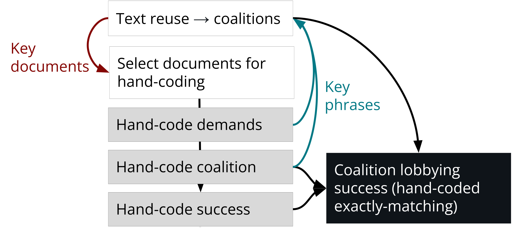
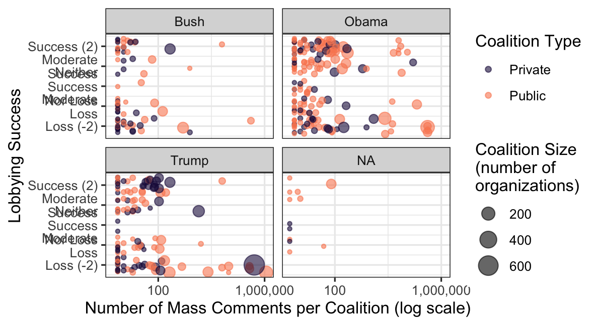

Iterative Hand-Coding and Computational Text Analysis
Application to Public Comments in US Federal Agency Rulemaking
Data:
58 million public comments on proposed rules, via regulations.gov
Methods:
Hand coding \(\Longleftrightarrow\) computational text analysis
Human coding and computational text analysis are more powerful when combined in an iterative workflow:
- Text analysis tools can strategically select texts for human coders—texts representing larger samples and outlier texts of high inferential value.
- Preprocessing can speed up hand-coding by extracting features like names and key sentences.
- Humans and computers can iteratively tag entities using regex tables and group texts by key features (e.g., identify lobbying coalitions by common policy demands)
A sample of 13,000 hand-coded comments yields 41 million as-good-as-hand-coded comments regarding both the organizations that mobilized them and the extent to which policy changed in the direction they sought.
Hand-coding dynamic data with Google Sheets
Workflow: googlesheets4 allows analysis and improving data in real-time:
- The “org_name” column is populated with a guess from automated methods. As humans identify new organizations and aliases, other comments with the same entity strings are auto-coded to match human coding.
- As humans identify each organization’s policy “ask,” other texts with the same ask are put in their coalition.
- If the organization and coalition become known, it no longer needs hand coding.
Link comments to organizations

Link comments to organizations
- Deductive: Start with databases of known entities.
| Entity | Pattern |
|---|---|
| 3M Co | 3M Co|3M Health Information Systems|Ceradyne|Cogent Systems|Hybrivet Systems |
| Teamsters Union | Brotherhood of Locomotive Engineers (and|&) Trainmen|Brotherhood of Maint[a-z]* of Way Employ|Teamsters |
- Inductive: Add entity strings that frequently appear in the data to regex tables.
- Iterative: Add to regex tables as humans identify new entities or new aliases. Update data (Google Sheets) to speed hand coding.
Identify coalitions with text reuse
“…jobs and our economy. I am also concerned that your proposal allows power plants to buy and sell mercury pollution credits. This would permit some plants to continue to harm…”
“…pollutants like dioxin. I am also concerned that your proposal allows power plants to buy and sell mercury pollution credits. This kind of market-based mechanism to reduce …”
Identify coalitions with text reuse
- Document A is unique
- B, C, and D share text
- E and F are the same text


Iteratively group commenters into coalitions
- Humans identify groups of selected comments (e.g., lobbying coalitions)
- Humans copy and paste key phrases
- Computer puts other comments containing those phrases in the same group (coalition)
- Preprocessing tip: Summaries speed hand-coding (e.g., use
textrankto select representative sentences).
Iteratively group commenters into coalitions
Results: Most public comments result from organized pressure campaigns
“Mass” comments share a 10-gram with 99+ other comments.
Pressure results from organized campaigns. Of 58 million public comments on proposed agency rules, 2005-2020
- The top 100 organizations mobilized 44 million
- The top 10 organizations mobilized 26 million
Who gets their substantive policy demands met?
- Business Associations
- Law Firms & National Advocacy Organizations

Larger coalitions → more likely to win
Lobbying Success by Campaign Size
Larger coalitions → more likely to win
Policy Text Change by Coalition Size

Next steps
- Compare exact entity linking (regex tables) to probabilistic methods (linkit, fastlink, supervised classifiers, zero & one-shot LLM prompts)
- Compare exact grouping (e.g., by policy demands) to supervised classifiers & one-shot LLM prompts.
Preliminary results for GPT-4:
- organizations and their types \(\color{\green}{\checkmark}\)
- support for a proposed rule ¯\_(ツ)_/¯
- changes from a draft to final rule \(\color{\red}{✗}\)
- lobbying successes not highlighted in rule preamble \(\color{\red}{✗}\)
Thank you!
\(\longrightarrow\) judgelord.github.io/research/iterative
Devin Judge-Lord <judgelor@umich.edu>